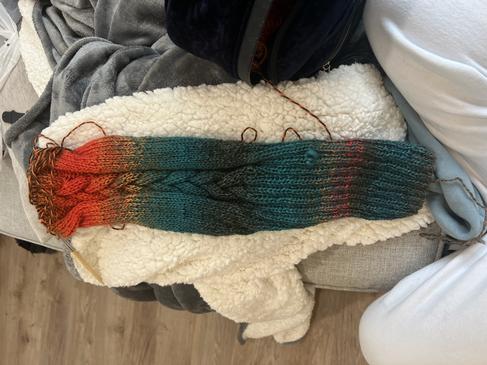

My Passions
Among many things fiber art is a huge part of my life. I dream one day to spread the joy I get from knitting and crocheting with many others. My grandpa taught me how to knit at the age of five. Unfortunately he passed when I was ten and so now I have grown fond of the lost art he taught me in order to feel like I still have him in my life.

My goals
I never really thought I was cut out to sell the items I made. As of recently I've decided to give it a shot. I make a variety of items and I hope one day I get to sell at a market. My biggest goal is to open a yarn shop of my own, but I know I need to take little steps first.

Intricate wonders
I have a hard time with knitting because I feel as though it takes a while to make anything, I also prefer to make stuffed animals and I don't feel as though knitting can achieve the detail that crocheting does. Although, whenever I take a break from crocheting and I pick up a knitting project I am amazed by the beautiful detail it can cathc it garmets. Pair with beautiful colors it always leaves me in awe.